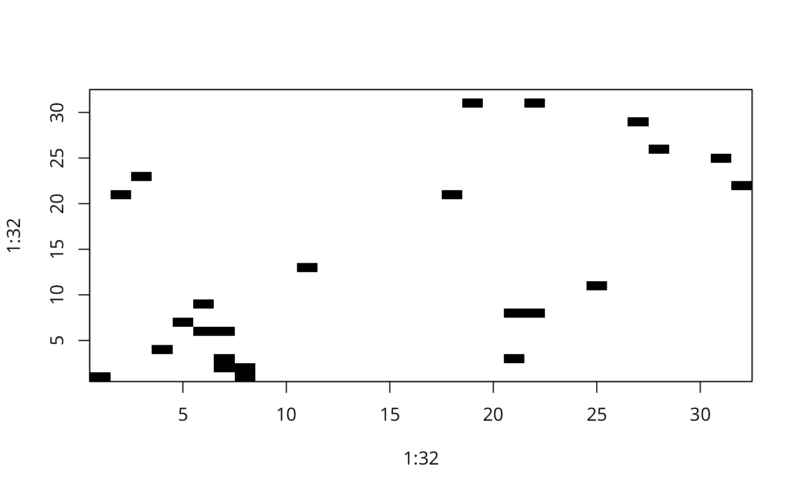

joincount.multi.RdA function for tallying join counts between same-colour and different colour spatial objects, where neighbour relations are defined by a weights list. Given the global counts in each colour, expected counts and variances are calculated under non-free sampling, and a z-value reported. Since multiple tests are reported, no p-values are given, allowing the user to adjust the significance level applied. Jtot is the count of all different-colour joins.
joincount.multi(fx, listw, zero.policy = FALSE, spChk = NULL, adjust.n=TRUE) # S3 method for jcmulti print(x, ...)
| fx | a factor of the same length as the neighbours and weights objects in listw |
|---|---|
| listw | a |
| zero.policy | if TRUE assign zero to the lagged value of zones without neighbours, if FALSE assign NA |
| adjust.n | default TRUE, if FALSE the number of observations is not adjusted for no-neighbour observations, if TRUE, the number of observations is adjusted consistently (up to and including spdep 0.3-28 the adjustment was inconsistent - thanks to Tomoki NAKAYA for a careful bug report) |
| spChk | should the data vector names be checked against the spatial objects for identity integrity, TRUE, or FALSE, default NULL to use |
| x | object to be printed |
| ... | arguments to be passed through for printing |
A matrix with class jcmulti with row and column names for observed and expected counts, variance, and z-value.
Cliff, A. D., Ord, J. K. 1981 Spatial processes, Pion, p. 20; Upton, G., Fingleton, B. 1985 Spatial data analysis by example: point pattern and quatitative data, Wiley, pp. 158--170.
The derivation of the test (Cliff and Ord, 1981, p. 18) assumes that the weights matrix is symmetric. For inherently non-symmetric matrices, such as k-nearest neighbour matrices, listw2U() can be used to make the matrix symmetric. In non-symmetric weights matrix cases, the variance of the test statistic may be negative.
data(oldcol) HICRIME <- cut(COL.OLD$CRIME, breaks=c(0,35,80), labels=c("low","high")) names(HICRIME) <- rownames(COL.OLD) joincount.multi(HICRIME, nb2listw(COL.nb, style="B"))#> Joincount Expected Variance z-value #> low:low 34.000 29.592 18.895 1.0141 #> high:high 54.000 27.224 17.888 6.3307 #> high:low 28.000 59.184 26.233 -6.0884 #> Jtot 28.000 59.184 26.233 -6.0884data(hopkins, package="spData") image(1:32, 1:32, hopkins[5:36,36:5], breaks=c(-0.5, 3.5, 20), col=c("white", "black"))box()hopkins.rook.nb <- cell2nb(32, 32, type="rook") unlist(spweights.constants(nb2listw(hopkins.rook.nb, style="B")))#> n n1 n2 n3 nn S0 S1 S2 #> 1024 1023 1022 1021 1048576 3968 7936 61984hopkins.queen.nb <- cell2nb(32, 32, type="queen") hopkins.bishop.nb <- diffnb(hopkins.rook.nb, hopkins.queen.nb, verbose=FALSE) hopkins4 <- hopkins[5:36,36:5] hopkins4[which(hopkins4 > 3, arr.ind=TRUE)] <- 4 hopkins4.f <- factor(hopkins4) table(hopkins4.f)#> hopkins4.f #> 0 1 2 3 4 #> 657 215 98 30 24#> Joincount Expected Variance z-value #> 0:0 864.00000 816.27273 116.05233 4.4304 #> 1:1 94.00000 87.14015 55.25216 0.9229 #> 2:2 18.00000 18.00379 14.81562 -0.0010 #> 3:3 2.00000 1.64773 1.55539 0.2825 #> 4:4 5.00000 1.04545 0.99845 3.9576 #> 1:0 503.00000 535.05682 227.76750 -2.1241 #> 2:0 213.00000 243.88636 97.21769 -3.1325 #> 2:1 99.00000 79.81061 59.01930 2.4978 #> 3:0 61.00000 74.65909 28.58592 -2.5547 #> 3:1 28.00000 24.43182 18.99976 0.8186 #> 3:2 15.00000 11.13636 9.82411 1.2327 #> 4:0 40.00000 59.72727 22.78583 -4.1327 #> 4:1 23.00000 19.54545 15.26564 0.8842 #> 4:2 14.00000 8.90909 7.90051 1.8112 #> 4:3 5.00000 2.72727 2.58616 1.4133 #> Jtot 1001.00000 1059.89015 273.78610 -3.5591cat("replicates Upton & Fingleton table 3.4 (p. 166)\n")#> replicates Upton & Fingleton table 3.4 (p. 166)#> Joincount Expected Variance z-value #> 0:0 823.00000 790.76420 144.44877 2.6821 #> 1:1 101.00000 84.41702 55.98143 2.2164 #> 2:2 19.00000 17.44117 14.61542 0.4077 #> 3:3 3.00000 1.59624 1.51444 1.1407 #> 4:4 3.00000 1.01278 0.97111 2.0166 #> 1:0 497.00000 518.33629 234.93545 -1.3920 #> 2:0 216.00000 236.26491 104.42142 -1.9831 #> 2:1 81.00000 77.31652 58.70829 0.4807 #> 3:0 58.00000 72.32599 31.49151 -2.5529 #> 3:1 21.00000 23.66832 18.85316 -0.6145 #> 3:2 17.00000 10.78835 9.62487 2.0022 #> 4:0 48.00000 57.86080 25.15973 -1.9659 #> 4:1 21.00000 18.93466 15.14473 0.5307 #> 4:2 10.00000 8.63068 7.73708 0.4923 #> 4:3 4.00000 2.64205 2.51686 0.8560 #> Jtot 973.00000 1026.76858 284.51030 -3.1877cat("replicates Upton & Fingleton table 3.6 (p. 168)\n")#> replicates Upton & Fingleton table 3.6 (p. 168)#> Joincount Expected Variance z-value #> 0:0 1687.0000 1607.0369 303.8034 4.5877 #> 1:1 195.0000 171.5572 114.2057 2.1936 #> 2:2 37.0000 35.4450 29.6821 0.2854 #> 3:3 5.0000 3.2440 3.0687 1.0024 #> 4:4 8.0000 2.0582 1.9674 4.2361 #> 1:0 1000.0000 1053.3931 480.6959 -2.4353 #> 2:0 429.0000 480.1513 215.0360 -3.4882 #> 2:1 180.0000 157.1271 119.3987 2.0932 #> 3:0 119.0000 146.9851 65.1029 -3.4684 #> 3:1 49.0000 48.1001 38.3268 0.1454 #> 3:2 32.0000 21.9247 19.5237 2.2802 #> 4:0 88.0000 117.5881 52.0312 -4.1019 #> 4:1 44.0000 38.4801 30.7868 0.9948 #> 4:2 24.0000 17.5398 15.6933 1.6308 #> 4:3 9.0000 5.3693 5.0994 1.6078 #> Jtot 1974.0000 2086.6587 582.8326 -4.6665cat("replicates Upton & Fingleton table 3.7 (p. 169)\n")#> replicates Upton & Fingleton table 3.7 (p. 169)